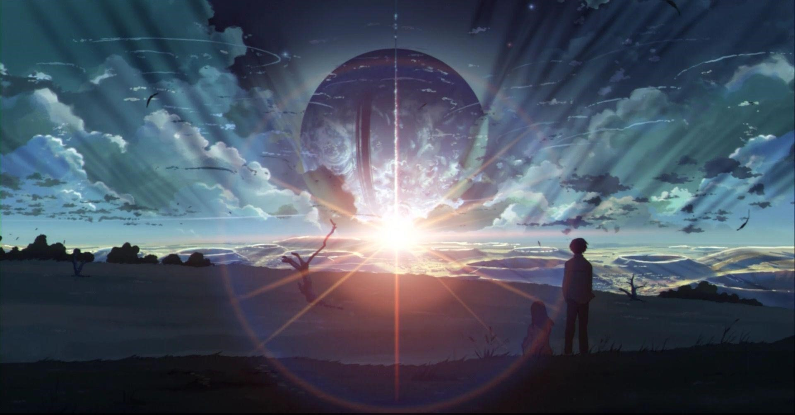

Welcome To Anime World

- Jujutsu kaisen has taken the position of One Piece and became the No.1 selling manga in Japan
- The Most Awaited Anime Series SoloLeveling is gonna air soon.
What is anime and how is it created?
Anime is an animation genre created in Japan in the early 1900s, and has evolved significantly over time. Energetic characters and themes like supernatural forces, romance, and sci fi characterize most anime films.
In 3D animation, animators start with a rigged 3D model, positioning the character, prop, or vehicle and developing motion paths between poses (key frames) for their movement. The computer fills in the gaps and animates the character. The animator can refine each frame until they are happy with the animation.